<!DOCTYPE html>
<html lang="en">
  <head>
    <meta charset="utf-8" />
    <meta name="viewport" content="width=device-width, initial-scale=1.0, maximum-scale=1.0, user-scalable=no" />

    <title></title>
    <link rel="stylesheet" href="dist/reveal.css" />
    <link rel="stylesheet" href="css/mattropolis.css" id="theme" />
    <link rel="stylesheet" href="plugin/highlight/zenburn.css" />
	<link rel="stylesheet" href="css/layout.css" />
	<link rel="stylesheet" href="plugin/customcontrols/style.css">
	<link rel="stylesheet" href="plugin/chalkboard/style.css">

	<link rel="stylesheet" href="plugin/reveal-pointer/pointer.css" />


    <script defer src="dist/fontawesome/all.min.js"></script>

	<script type="text/javascript">
		var forgetPop = true;
		function onPopState(event) {
			if(forgetPop){
				forgetPop = false;
			} else {
				parent.postMessage(event.target.location.href, "app://obsidian.md");
			}
        }
		window.onpopstate = onPopState;
		window.onmessage = event => {
			if(event.data == "reload"){
				window.document.location.reload();
			}
			forgetPop = true;
		}

		function fitElements(){
			const itemsToFit = document.getElementsByClassName('fitText');
			for (const item in itemsToFit) {
				if (Object.hasOwnProperty.call(itemsToFit, item)) {
					var element = itemsToFit[item];
					fitElement(element,1, 1000);
					element.classList.remove('fitText');
				}
			}
		}

		function fitElement(element, start, end){

			let size = (end + start) / 2;
			element.style.fontSize = `${size}px`;

			if(Math.abs(start - end) < 1){
				while(element.scrollHeight > element.offsetHeight){
					size--;
					element.style.fontSize = `${size}px`;
				}
				return;
			}

			if(element.scrollHeight > element.offsetHeight){
				fitElement(element, start, size);
			} else {
				fitElement(element, size, end);
			}		
		}


		document.onreadystatechange = () => {
			fitElements();
			if (document.readyState === 'complete') {
				if (window.location.href.indexOf("?export") != -1){
					parent.postMessage(event.target.location.href, "app://obsidian.md");
				}
				if (window.location.href.indexOf("print-pdf") != -1){
					let stateCheck = setInterval(() => {
						clearInterval(stateCheck);
						window.print();
					}, 250);
				}
			}
	};


        </script>
  </head>
  <body>
    <div class="reveal">
      <div class="slides"><section  data-markdown><script type="text/template"><!-- .slide: class="drop" -->
<div class="" style="position: absolute; left: 0px; top: 0px; height: 700px; width: 960px; min-height: 700px; display: flex; flex-direction: column; align-items: center; justify-content: center" absolute="true">

# Introduction
## What is population genetics? what does it study?
</div></script></section><section  data-markdown><script type="text/template"><!-- .slide: class="drop" data-auto-animate="true" -->
<div class="" style="position: absolute; left: 0px; top: 0px; height: 700px; width: 960px; min-height: 700px; display: flex; flex-direction: column; align-items: center; justify-content: center" absolute="true">

## What is biological evolution?
</div></script></section><section  data-markdown><script type="text/template"><!-- .slide: class="drop" data-auto-animate="true" -->
<div class="" style="position: absolute; left: 0px; top: 0px; height: 700px; width: 960px; min-height: 700px; display: flex; flex-direction: column; align-items: center; justify-content: center" absolute="true">

## What is biological evolution?

Biological evolution is the change over time in the **genetic composition of a population**, which changes due to the birth and death of individuals or the migration of individuals in or out of the population.
</div></script></section><section  data-markdown><script type="text/template"><!-- .slide: class="drop" data-auto-animate="true" -->
<div class="" style="position: absolute; left: 0px; top: 0px; height: 700px; width: 960px; min-height: 700px; display: flex; flex-direction: column; align-items: center; justify-content: center" absolute="true">

## What are the forces driving biological evolution?
</div></script></section><section  data-markdown><script type="text/template"><!-- .slide: class="drop" data-auto-animate="true" -->
<div class="" style="position: absolute; left: 0px; top: 0px; height: 700px; width: 960px; min-height: 700px; display: flex; flex-direction: column; align-items: center; justify-content: center" absolute="true">

## What are the population **events** driving biological evolution?
- birth <!-- .element: class="fragment" -->
- death <!-- .element: class="fragment" -->
- migration <!-- .element: class="fragment" -->
</div></script></section><section  data-markdown><script type="text/template"><!-- .slide: class="drop" -->
<div class="" style="position: absolute; left: 0px; top: 0px; height: 700px; width: 960px; min-height: 700px; display: flex; flex-direction: column; align-items: center; justify-content: center" absolute="true">

# Measuring genetic variation
</div></script></section><section  data-markdown><script type="text/template"><!-- .slide: class="drop" data-auto-animate="true" -->
<div class="" style="position: absolute; left: 0px; top: 0px; height: 700px; width: 960px; min-height: 700px; display: flex; flex-direction: column; align-items: center; justify-content: center" absolute="true">

## Types of genetic variation
- SNP
- &shy;<!-- .element: class="fragment" data-fragment-index="1" -->microsatellites
	- &shy;<!-- .element: class="fragment" data-fragment-index="2" -->What are microsatellites?
	- &shy;<!-- .element: class="fragment" data-fragment-index="3" -->what are they useful for?
- &shy;<!-- .element: class="fragment" data-fragment-index="4" -->CNV
</div></script></section><section  data-markdown><script type="text/template"><!-- .slide: class="drop" -->
<div class="" style="position: absolute; left: 0px; top: 0px; height: 700px; width: 960px; min-height: 700px; display: flex; flex-direction: column; align-items: center; justify-content: center" absolute="true">

## Types of genetic variation

<div class="callout callout-color-default">
<div class="callout-title">
<div class="callout-icon">

<i class="fas fa-pencil-alt" ></i>


</div>
<div class="callout-title-inner">

Haplotype

</div>
</div>
<div class="callout-content">

refer to the combination of alleles at multiple loci on the same chromosomal homolog.

</div>
</div>
</div></script></section><section  data-markdown><script type="text/template"><!-- .slide: class="drop" -->
<div class="" style="position: absolute; left: 0px; top: 0px; height: 700px; width: 960px; min-height: 700px; display: flex; flex-direction: column; align-items: center; justify-content: center" absolute="true">

### How do you draw the network (b) based on the alignment (a)?

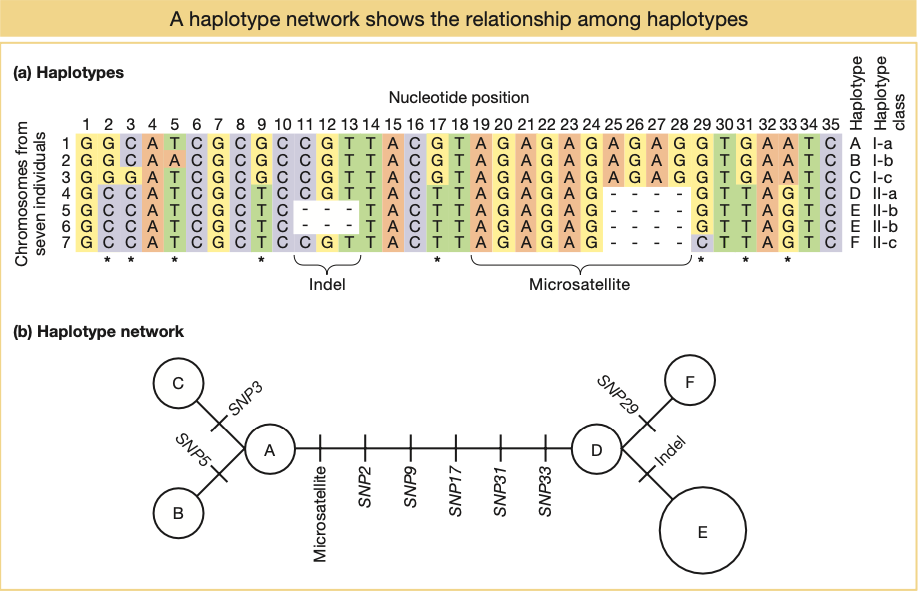


<div class="footnotes" role="doc-endnotes">
<ol>
<li id="fn:1" role="doc-endnote" class="footnote"><p>

Introduction to Genetic Analysis, ed 11, Fig. 18-4

</p></li></ol>
</div>
</div></script></section><section  data-markdown><script type="text/template"><!-- .slide: class="drop" -->
<div class="" style="position: absolute; left: 0px; top: 0px; height: 700px; width: 960px; min-height: 700px; display: flex; flex-direction: column; align-items: center; justify-content: center" absolute="true">

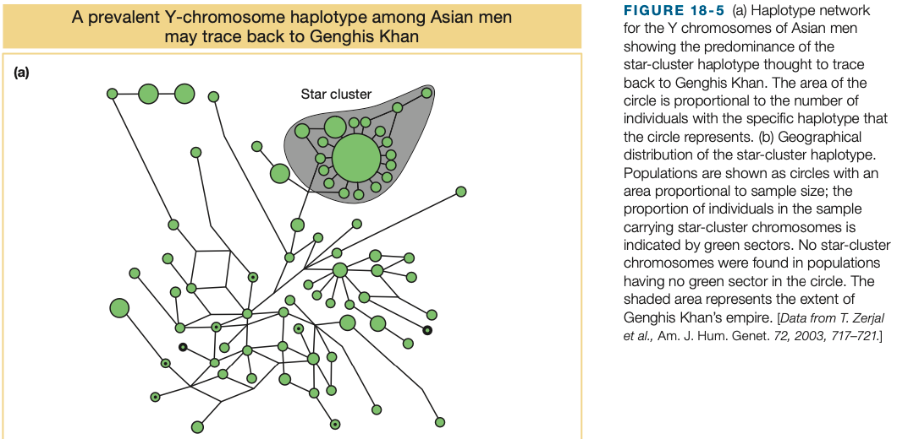


<div class="footnotes" role="doc-endnotes">
<ol>
<li id="fn:1" role="doc-endnote" class="footnote"><p>

Introduction to Genetic Analysis, ed 11, Fig. 18-5(a)

</p></li></ol>
</div>
</div></script></section><section  data-markdown><script type="text/template"><!-- .slide: class="drop" -->
<div class="" style="position: absolute; left: 0px; top: 0px; height: 700px; width: 960px; min-height: 700px; display: flex; flex-direction: column; align-items: center; justify-content: center" absolute="true">

### Distribution of the star-cluster haplotype
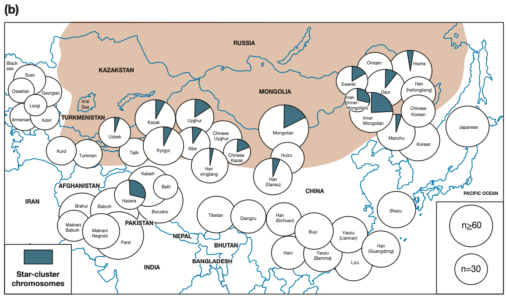


<div class="footnotes" role="doc-endnotes">
<ol>
<li id="fn:1" role="doc-endnote" class="footnote"><p>

Introduction to Genetic Analysis, ed 11, Fig. 18-5(b)

</p></li></ol>
</div>
</div></script></section><section  data-markdown><script type="text/template"><!-- .slide: class="drop" -->
<div class="" style="position: absolute; left: 0px; top: 0px; height: 700px; width: 960px; min-height: 700px; display: flex; flex-direction: column; align-items: center; justify-content: center" absolute="true">

## How do you quantify the level of genetic variation?


<div class="has-dark-background" style="background-color: forestgreen; position: absolute; left: 7.5%; top: 55%; height: 45%; width: 85%; display: flex; flex-direction: column; align-items: center; justify-content: center" >


- count the number of variable sites
- &shy;<!-- .element: class="fragment" data-fragment-index="1" -->account for the length of the region (sequence)
- &shy;<!-- .element: class="fragment" data-fragment-index="2" -->account for the number of sequences (sample size)
- &shy;<!-- .element: class="fragment" data-fragment-index="3" -->Average # of differences between two sequences
</div>
</div></script></section><section  data-markdown><script type="text/template"><!-- .slide: class="drop" data-auto-animate="true" -->
<div class="" style="position: absolute; left: 0px; top: 0px; height: 700px; width: 960px; min-height: 700px; display: flex; flex-direction: column; align-items: center; justify-content: center" absolute="true">

## Gene pool and genotype frequencies
<split left="2" right="1">
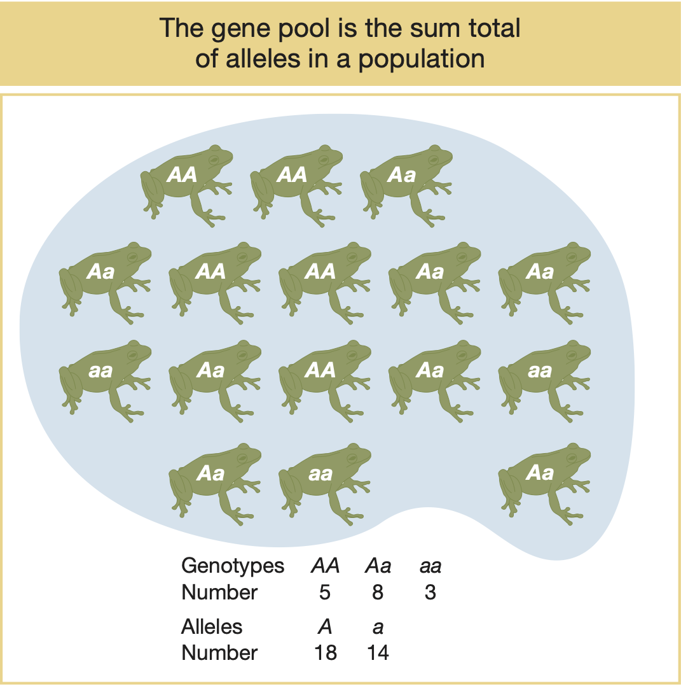


- what is a gene pool?
- &shy;<!-- .element: class="fragment" data-fragment-index="1" --><mark>**Locus**</mark>: "region of interest", may be an entire gene, or a single nucleotide
- &shy;<!-- .element: class="fragment" data-fragment-index="2" --><mark>**Allele**</mark>: different "versions" of the sequence existing in a population
- &shy;<!-- .element: class="fragment" data-fragment-index="3" --><mark>**Genotype**</mark>: denotes the total allele combinations at a locus, e.g., two alleles for diploids. <br><br>
- &shy;<!-- .element: class="fragment" data-fragment-index="4" -->What are the genotype frequencies?
- &shy;<!-- .element: class="fragment" data-fragment-index="5" -->What are the allele frequencies?
</split>
</div></script></section><section  data-markdown><script type="text/template"><!-- .slide: class="drop" data-auto-animate="true" -->
<div class="" style="position: absolute; left: 0px; top: 0px; height: 700px; width: 960px; min-height: 700px; display: flex; flex-direction: column; align-items: center; justify-content: center" absolute="true">

## Gene pool and genotype frequencies
<split left="2" right="1">


- Knowing the allele frequency (`$p_A = 18/32$`), what is a "reasonable guess" of the genotype frequency (e.g., for `$f_{A/A}$`)?
- &shy;<!-- .element: class="fragment" data-fragment-index="1" -->How close is it to the observed genotype frequency?
- &shy;<!-- .element: class="fragment" data-fragment-index="2" -->Now reflect on your intuitive guess, what assumptions need to be made for it to work?
</split>
</div></script></section><section  data-markdown><script type="text/template"><!-- .slide: class="drop" data-auto-animate="true" -->
<div class="" style="position: absolute; left: 0px; top: 0px; height: 700px; width: 960px; min-height: 700px; display: flex; flex-direction: column; align-items: center; justify-content: center" absolute="true">

## Hardy-Weinberg Equilibrium
    Suppose allele frequency of A = p, and frequency of a = q

| `$f_{A/A}$` | `$f_{A/a}$` | `$f_{a/a}$` |
| --------- | --------- | --------- |
| `$p^2$`     | `$2pq$`     | `$q^2$`     |
- &shy;<!-- .element: class="fragment" data-fragment-index="1" -->Assume the allele frequency of A is the same in females and males.
- &shy;<!-- .element: class="fragment" data-fragment-index="2" -->The probability of a baby frog to have A/A genotype is `$p^2$`
- &shy;<!-- .element: class="fragment" data-fragment-index="3" -->What other assumptions are needed?
- &shy;<!-- .element: class="fragment" data-fragment-index="4" --><mark>Will any evolutionary force, such as migration and natural selection, affect the Hardy-Weinberg Equilibrium?</mark>
</div></script></section><section  data-markdown><script type="text/template"><!-- .slide: class="drop" data-auto-animate="true" -->
<div class="" style="position: absolute; left: 0px; top: 0px; height: 700px; width: 960px; min-height: 700px; display: flex; flex-direction: column; align-items: center; justify-content: center" absolute="true">

## Hardy-Weinberg Equilibrium

<split left="1" right="2">

<div class="mermaid">
graph TD
	A[sexually mature]
	B[gene pool]
	C[new zygote]
	A-->|generate gamete|B
	B-->|union of gametes|C
	C-->|survive|A

</div>


- &shy;<!-- .element: class="fragment" data-fragment-index="1" -->HWE only refers to the step of forming new zygotes.
- &shy;<!-- .element: class="fragment" data-fragment-index="2" -->Only assumptions needed are 
	- &shy;<!-- .element: class="fragment" data-fragment-index="3" -->random mating **with respect to the locus of interest**
	- &shy;<!-- .element: class="fragment" data-fragment-index="4" -->same allele frequencies in both sexes
- &shy;<!-- .element: class="fragment" data-fragment-index="5" -->Under these assumptions, HWE is restored _instantaneously_ upon mating
- &shy;<!-- .element: class="fragment" data-fragment-index="6" -->Often hear about "no selection, no migration" only needed for HWE frequencies to represent a **long term equilibrium**.
</split>
</div></script></section><section  data-markdown><script type="text/template"><!-- .slide: class="drop" -->
<div class="" style="position: absolute; left: 0px; top: 0px; height: 700px; width: 960px; min-height: 700px; display: flex; flex-direction: column; align-items: center; justify-content: center" absolute="true">

### HWE exercise
<split left="3" right="1">
<div class="callout callout-color4">
<div class="callout-title">
<div class="callout-icon">

<i class="fas fa-question-circle" ></i>


</div>
<div class="callout-title-inner">

Question

</div>
</div>
<div class="callout-content">

On the coastal islands of British Columbia there is a subspecies of black bear (*Ursus americanus kermodei*, Kermode’s bear). Many members of this black bear subspecies are white; they’re sometimes called spirit bears. These bears aren’t hybrids with polar bears, nor are they albinos. They are homozygotes for a recessive change at the MC1R gene. Individuals who are GG at this SNP are white, while AA and AG individuals are black.

The genotype counts for the MC1R polymorphism in a sample of bears from British Columbia’s island populations from Ritland et al. (2001) are: `$AA=42, AG=24, GG=21$`

What are the expected frequencies of the three genotypes under HWE?

</div>
</div>

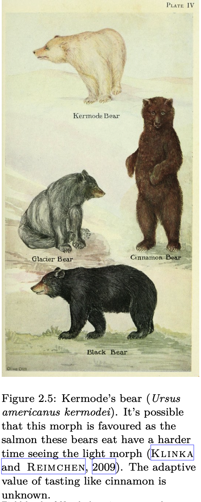


</split>
</div></script></section><section  data-markdown><script type="text/template"><!-- .slide: class="drop" data-auto-animate="true" -->
<div class="" style="position: absolute; left: 0px; top: 0px; height: 700px; width: 960px; min-height: 700px; display: flex; flex-direction: column; align-items: center; justify-content: center" absolute="true">

## Hardy-Weinberg Equilibrium

<split left="2" right="1">

- Challenge: how does HWE apply to X-linked loci?
- 
- &shy;<!-- .element: class="fragment" data-fragment-index="1" -->Male-baldness is an X-linked trait.
- &shy;<!-- .element: class="fragment" data-fragment-index="2" -->Androgen Receptor (AR) is an X-linked gene involved in male development.
- &shy;<!-- .element: class="fragment" data-fragment-index="3" -->an AR haplotype called _Eur-H1_ is **strongly associated with pattern baldness**.
- &shy;<!-- .element: class="fragment" data-fragment-index="4" -->_Eur-H1_ occurs at a frequency of 0.71 in Europe. What percentage of European men are expected to have this allele?
- &shy;<!-- .element: class="fragment" data-fragment-index="5" -->European women?

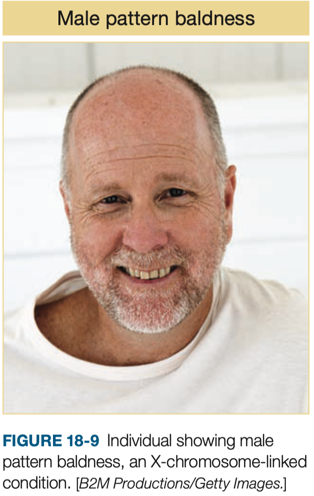

</split>


<div class="footnotes" role="doc-endnotes">
<ol>
<li id="fn:1" role="doc-endnote" class="footnote"><p>

Introduction to Genetic Analysis, ed 11, Fig. 18-9

</p></li></ol>
</div>
</div></script></section><section  data-markdown><script type="text/template"><!-- .slide: class="drop" data-auto-animate="true" -->
<div class="" style="position: absolute; left: 0px; top: 0px; height: 700px; width: 960px; min-height: 700px; display: flex; flex-direction: column; align-items: center; justify-content: center" absolute="true">

## Hardy-Weinberg Equilibrium

<split left="2" right="1">
<div class="r-stack">
  
  
</div>

- Solid line: mean genotype frequency; dashed line: HWE prediction. [Source](https://gcbias.org/2011/10/13/population-genetics-course-resources-Hardy--Weinberg-eq/)

- While HWE sounds too ideal to be a good fit to real data, researchers found that it actually holds remarkably well within populations. Since the main assumption for HWE to be true is that mating is random, how should one understand this?
</split>
</div></script></section><section  data-markdown><script type="text/template"><!-- .slide: class="drop" data-auto-animate="true" -->
<div class="" style="position: absolute; left: 0px; top: 0px; height: 700px; width: 960px; min-height: 700px; display: flex; flex-direction: column; align-items: center; justify-content: center" absolute="true">

## Major violations to HWE
### **Assortative mating**
- &shy;<!-- .element: class="fragment" data-fragment-index="1" -->Non-random mating **_with respect to_** the genotype at a locus
- &shy;<!-- .element: class="fragment" data-fragment-index="2" -->Ex: negative or disassortative mating
	- &shy;<!-- .element: class="fragment" data-fragment-index="3" -->Major histocompatibility complex (MHC) locus, involved in immune response to pathogens, higher heterzygosity = more diversity ≈ higher fitness.
	- &shy;<!-- .element: class="fragment" data-fragment-index="4" -->"sweaty shirt test": MHC alleles affect mating choice, prefer individuals with different MHC alleles
</div></script></section><section  data-markdown><script type="text/template"><!-- .slide: class="drop" data-auto-animate="true" -->
<div class="" style="position: absolute; left: 0px; top: 0px; height: 700px; width: 960px; min-height: 700px; display: flex; flex-direction: column; align-items: center; justify-content: center" absolute="true">

## Major violations to HWE
###  isolation by distance

<split left="1" right="1">
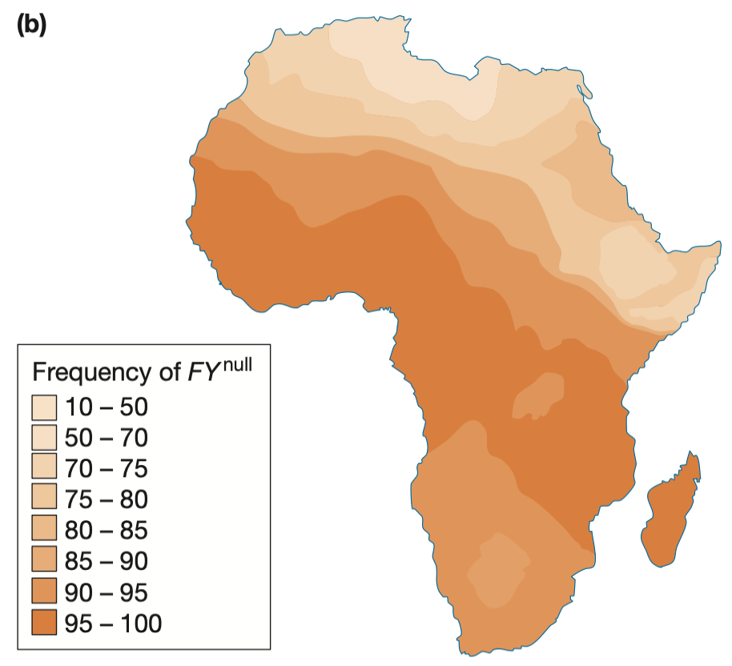


> Frequency variation for the FYnull allele of the Duffy blood group locus in Africa. [ Data from P. C. Sabeti et al., Science 312, 2006, 1614–1620.]
> 
> <mark>question</mark>
> 
> what's the consequence of isolation by distance?
</split>
</div></script></section><section  data-markdown><script type="text/template"><!-- .slide: class="drop" data-auto-animate="true" -->
<div class="" style="position: absolute; left: 0px; top: 0px; height: 700px; width: 960px; min-height: 700px; display: flex; flex-direction: column; align-items: center; justify-content: center" absolute="true">

## Major violations to HWE
###  inbreeding
- &shy;<!-- .element: class="fragment" data-fragment-index="1" -->Mating between _close_ relatives.
- &shy;<!-- .element: class="fragment" data-fragment-index="2" -->How does inbreeding violate HWE?
- &shy;<!-- .element: class="fragment" data-fragment-index="3" -->Why is inbreeding potentially harmful in outcrossing populations (like humans)?
- &shy;<!-- .element: class="fragment" data-fragment-index="4" -->Selfing (extreme form of inbreeding) is common in animals and plants. What may be some advantages?
- &shy;<!-- .element: class="fragment" data-fragment-index="5" -->Identical-by-Descent (IBD)
</div></script></section><section  data-markdown><script type="text/template"><!-- .slide: class="drop" data-auto-animate="true" -->
<div class="" style="position: absolute; left: 0px; top: 0px; height: 700px; width: 960px; min-height: 700px; display: flex; flex-direction: column; align-items: center; justify-content: center" absolute="true">

### Measuring inbreeding
<split left="1" right="2">
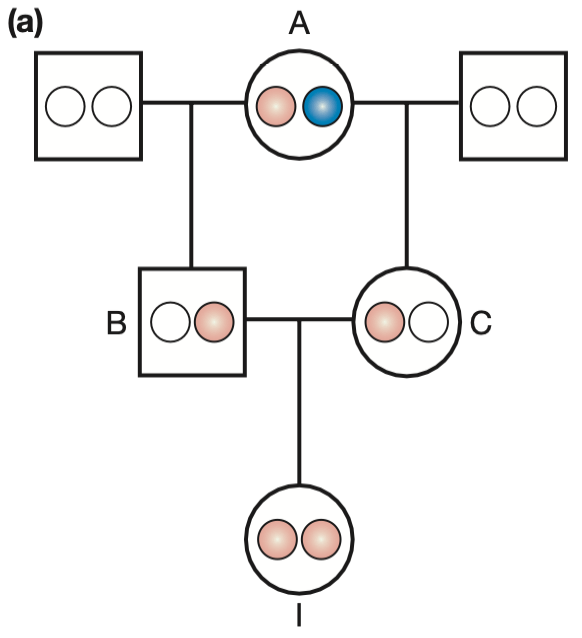


- &shy;<!-- .element: class="fragment" data-fragment-index="1" -->**Inbreeding coefficient** (F): probability that two alleles in an individual trace back to the same copy in a common ancestor.
- &shy;<!-- .element: class="fragment" data-fragment-index="2" -->**Identical-by-Descent** (IBD): define two alleles to be IBD if they are identical due to transmission from a common ancestor in the past few generations
- &shy;<!-- .element: class="fragment" data-fragment-index="3" -->A "closed loop" indicates inbreeding.
</split>
</div></script></section><section  data-markdown><script type="text/template"><!-- .slide: class="drop" data-auto-animate="true" -->
<div class="" style="position: absolute; left: 0px; top: 0px; height: 700px; width: 960px; min-height: 700px; display: flex; flex-direction: column; align-items: center; justify-content: center" absolute="true">

### Measuring inbreeding
<split left="1" right="2">

<div class="mermaid">
graph TD
	A((A)) --> | z | B((B))
	A --> |t| C((C))
	B --> |w| I((I))
	C --> |x| I

</div>


- What's the probability that individual I is inbred? (calculating its inbreeding coefficient)
- &shy;<!-- .element: class="fragment" data-fragment-index="1" -->The alleles transmitted through each mating are labeled x, t, w and z. Use "~" to indicate IBD.
- &shy;<!-- .element: class="fragment" data-fragment-index="2" -->We wish to calculate `$P(w \sim x)$`
- &shy;<!-- .element: class="fragment" data-fragment-index="3" -->`$P(x \sim t) = \frac{1}{2}; P(w \sim z) = \frac{1}{2}$`
- &shy;<!-- .element: class="fragment" data-fragment-index="4" -->`$P(z \sim t) = \frac{1}{2} + \frac{1}{2} F_A$`
- &shy;<!-- .element: class="fragment" data-fragment-index="5" -->`$F_I = P(z \sim t) \times P(w \sim z) \times P(x \sim t) = (\frac{1}{2})^3(1+F_A)$`
</split>
</div></script></section><section  data-markdown><script type="text/template"><!-- .slide: class="drop" data-auto-animate="true" -->
<div class="" style="position: absolute; left: 0px; top: 0px; height: 700px; width: 960px; min-height: 700px; display: flex; flex-direction: column; align-items: center; justify-content: center" absolute="true">

### Consequences of inbreeding
<mark>Examples of inbreeding effect on frequency of homozygous recessives</mark>
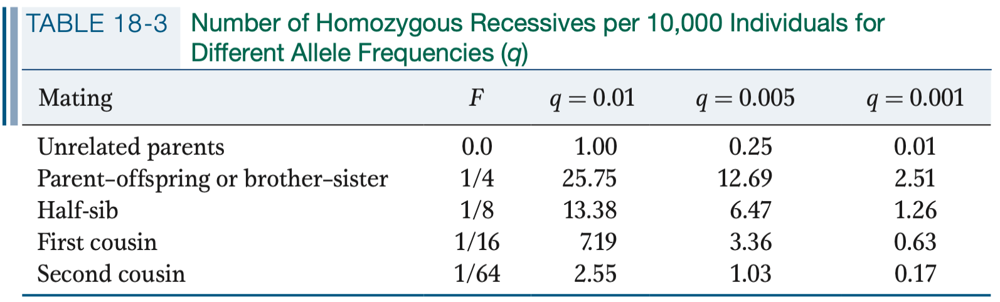


<div class="footnotes" role="doc-endnotes">
<ol>
<li id="fn:1" role="doc-endnote" class="footnote"><p>

Introduction to Genetic Analysis, ed 11, Table 18-3

</p></li></ol>
</div>
</div></script></section><section  data-markdown><script type="text/template"><!-- .slide: class="drop" -->
<div class="" style="position: absolute; left: 0px; top: 0px; height: 700px; width: 960px; min-height: 700px; display: flex; flex-direction: column; align-items: center; justify-content: center" absolute="true">

### Consequence of inbreeding
<split left="2" right="1">
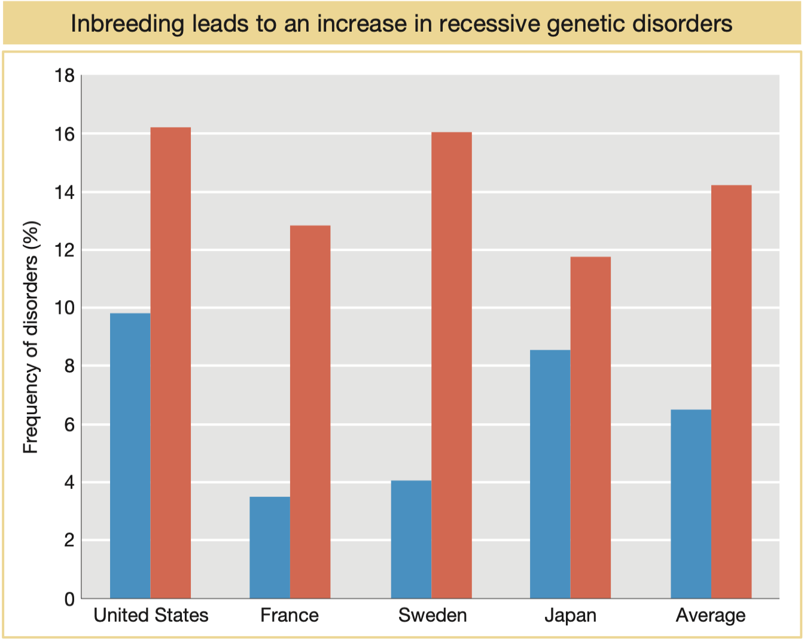


> Frequency of genetic disorders among children of unrelated parents (blue columns) compared to that of children of parents who are first cousins (red columns). 
> 
> Data from C. Stern, Principles of Human Genetics, W. H. Freeman, 1973.

</split>


<div class="footnotes" role="doc-endnotes">
<ol>
<li id="fn:1" role="doc-endnote" class="footnote"><p>

Introduction to Genetic Analysis, ed 11, Fig. 18-13

</p></li></ol>
</div>
</div></script></section><section  data-markdown><script type="text/template"><!-- .slide: class="drop" -->
<div class="" style="position: absolute; left: 0px; top: 0px; height: 700px; width: 960px; min-height: 700px; display: flex; flex-direction: column; align-items: center; justify-content: center" absolute="true">

## Review of Mon lecture
<div class="callout callout-color4">
<div class="callout-title">
<div class="callout-icon">

<i class="fas fa-question-circle" ></i>


</div>
<div class="callout-title-inner">

Question

</div>
</div>
<div class="callout-content">

1. Describe Hardy-Weinberg Equilibrium according to your understanding. What does it concern and what are its key assumptions?

2. Describe two ways for measuring the level of genetic variation.

</div>
</div>
</div>

<aside class="notes"><p><code>$\pi = \sum_{i=1}^{n}(1-\sum_{j=1}^{m}(p_{ij}^2))$</code></p>
</aside></script></section><section  data-markdown><script type="text/template"><!-- .slide: class="drop" -->
<div class="" style="position: absolute; left: 0px; top: 0px; height: 700px; width: 960px; min-height: 700px; display: flex; flex-direction: column; align-items: center; justify-content: center" absolute="true">

## Level of genetic variation vary across species
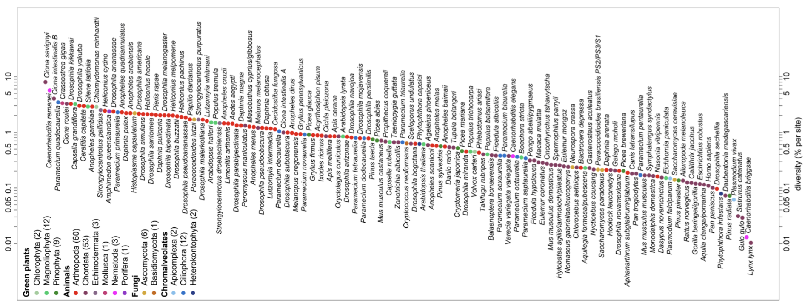


<div class="has-light-background" style="background-color: white; position: absolute; left: 50%; top: 20%; height: 80%; width: 50%; display: flex; flex-direction: column; align-items: center; justify-content: center" >
<!-- .element: class="fragment" -->


<p style="color:black">M. Lynch and J. S. Conery, Science 2003</p>
</div>

<div class="footnotes" role="doc-endnotes">
<ol>
<li id="fn:1" role="doc-endnote" class="footnote"><p>

Leffler et al. 2012. “Revisiting an Old Riddle: What Determines Genetic Diversity Levels within Species?” _PLoS Biology_ 10 (9): e1001388. [https://doi.org/10.1371/journal.pbio.1001388](https://doi.org/10.1371/journal.pbio.1001388).

</p></li></ol>
</div>
</div></script></section><section  data-markdown><script type="text/template"><!-- .slide: class="drop" -->
<div class="" style="position: absolute; left: 0px; top: 0px; height: 700px; width: 960px; min-height: 700px; display: flex; flex-direction: column; align-items: center; justify-content: center" absolute="true">

## What forces shape the level and pattern of genetic variation?
- &shy;<!-- .element: class="fragment" data-fragment-index="1" -->How do new alleles enter the gene pool?
- &shy;<!-- .element: class="fragment" data-fragment-index="2" -->What forces drive changes in the frequency of alleles?
- &shy;<!-- .element: class="fragment" data-fragment-index="3" -->How can existing genetic variation recombine to create novel combinations of alleles?
- &shy;<!-- .element: class="fragment" data-fragment-index="4" -->Forces examined next
	1) mutation
	2) migration
	3) drift
	4) recombination
	5) selection
</div></script></section><section  data-markdown><script type="text/template"><!-- .slide: class="drop" -->
<div class="" style="position: absolute; left: 0px; top: 0px; height: 700px; width: 960px; min-height: 700px; display: flex; flex-direction: column; align-items: center; justify-content: center" absolute="true">

### Mutation
<split even>
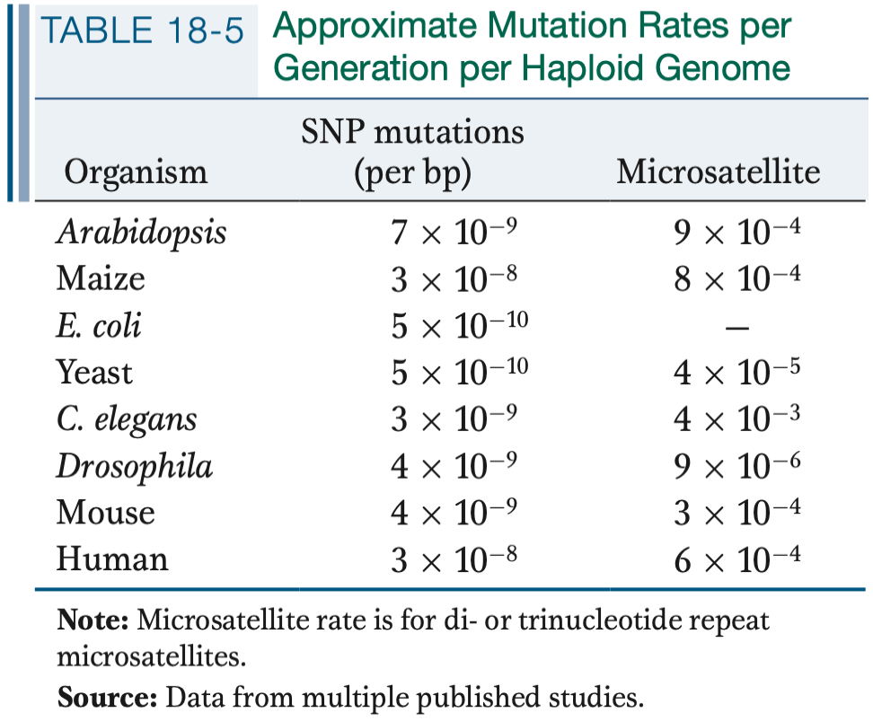


- **Mutation rate** (`$\mu$`): probability that a copy of an allele changes to some other allelic form _in one generation_
- &shy;<!-- .element: class="fragment" data-fragment-index="1" -->doesn't just apply to a single nucleotide position - for any locus
- &shy;<!-- .element: class="fragment" data-fragment-index="2" -->in a single generation is important - other forces can change allele forms, but they act after the formation of zygote stage
- &shy;<!-- .element: class="fragment" data-fragment-index="3" -->data in human (circa 2009) gave an estimate of `$\sim 3.0 \times 10^{-8}$` mutations/nucleotide/generation for a part of the Y-chromosome. if we extrapolate this to the entire human genome, we get an estimate of about 100 new mutations one would inherit from each of our parents _on average_.
</split>
</div></script></section><section  data-markdown><script type="text/template"><!-- .slide: class="drop" -->
<div class="" style="position: absolute; left: 0px; top: 0px; height: 700px; width: 960px; min-height: 700px; display: flex; flex-direction: column; align-items: center; justify-content: center" absolute="true">

### Migration
- In addition to mutation, migration is the other way by which new variation can be introduced into a population (not counting **new combinations**, see recombination)
- when there is isolation by distance, migration (or gene flow) is a homogenizing force, preventing allele frequencies from diverging too far
</div></script></section><section  data-markdown><script type="text/template"><!-- .slide: class="drop" -->
<div class="" style="position: absolute; left: 0px; top: 0px; height: 700px; width: 960px; min-height: 700px; display: flex; flex-direction: column; align-items: center; justify-content: center" absolute="true">

### Recombination
- Alleles are not gained or lost, but new combinations (haplotypes) are created by "mixing" existing ones.
- &shy;<!-- .element: class="fragment" data-fragment-index="1" -->Let's consider the observed and expected frequencies of the four possible haplotypes for two loci, each with two alleles (A and B, with alleles A/a and B/b)
	- &shy;<!-- .element: class="fragment" data-fragment-index="2" -->the four possible haplotypes are?
	- &shy;<!-- .element: class="fragment" data-fragment-index="3" -->if the frequencies of the alleles are `$p_A$` and `$p_B$`, what are the expected frequencies for the four haplotypes naively?
	- &shy;<!-- .element: class="fragment" data-fragment-index="4" -->`$P_{AB} = p_A \times p_B$` etc.
	- &shy;<!-- .element: class="fragment" data-fragment-index="5" -->If the observed frequencies are very close to the expected, we say that the two loci are in **linkage equilibrium**
	- &shy;<!-- .element: class="fragment" data-fragment-index="6" -->If not, then the loci are said to be in **linkage disequilibrium (LD)**.
</div></script></section><section  data-markdown><script type="text/template"><!-- .slide: class="drop" data-auto-animate="true" -->
<div class="" style="position: absolute; left: 0px; top: 0px; height: 700px; width: 960px; min-height: 700px; display: flex; flex-direction: column; align-items: center; justify-content: center" absolute="true">

### Linkage Disequilibrium

<split even>
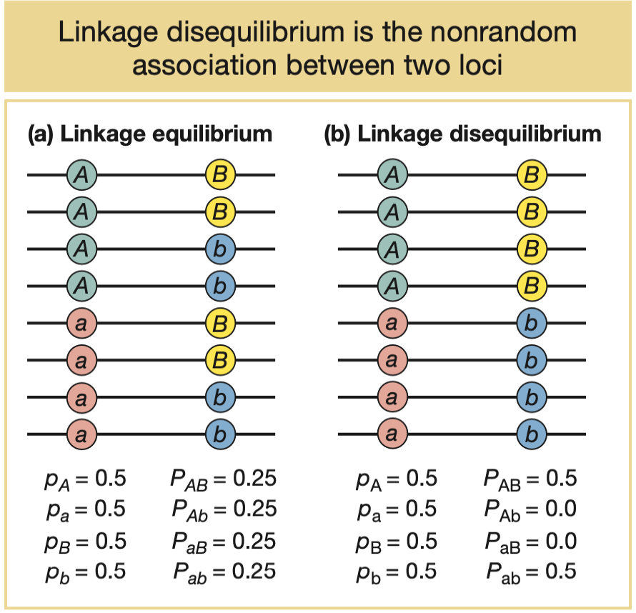


- Define LD as the difference (D) between the observed and expected frequencies
	- &shy;<!-- .element: class="fragment" data-fragment-index="1" -->`$D=P_{AB}-p_A p_B$`
- &shy;<!-- .element: class="fragment" data-fragment-index="2" --><mark>Exercise</mark>: calculate D for the two scenarios on the left

</split>


<div class="footnotes" role="doc-endnotes">
<ol>
<li id="fn:1" role="doc-endnote" class="footnote"><p>

Introduction to Genetic Analysis, ed 11, Fig. 18-17

</p></li></ol>
</div>
</div></script></section><section  data-markdown><script type="text/template"><!-- .slide: class="drop" data-auto-animate="true" -->
<div class="" style="position: absolute; left: 0px; top: 0px; height: 700px; width: 960px; min-height: 700px; display: flex; flex-direction: column; align-items: center; justify-content: center" absolute="true">

### Linkage Disequilibrium

<split even>
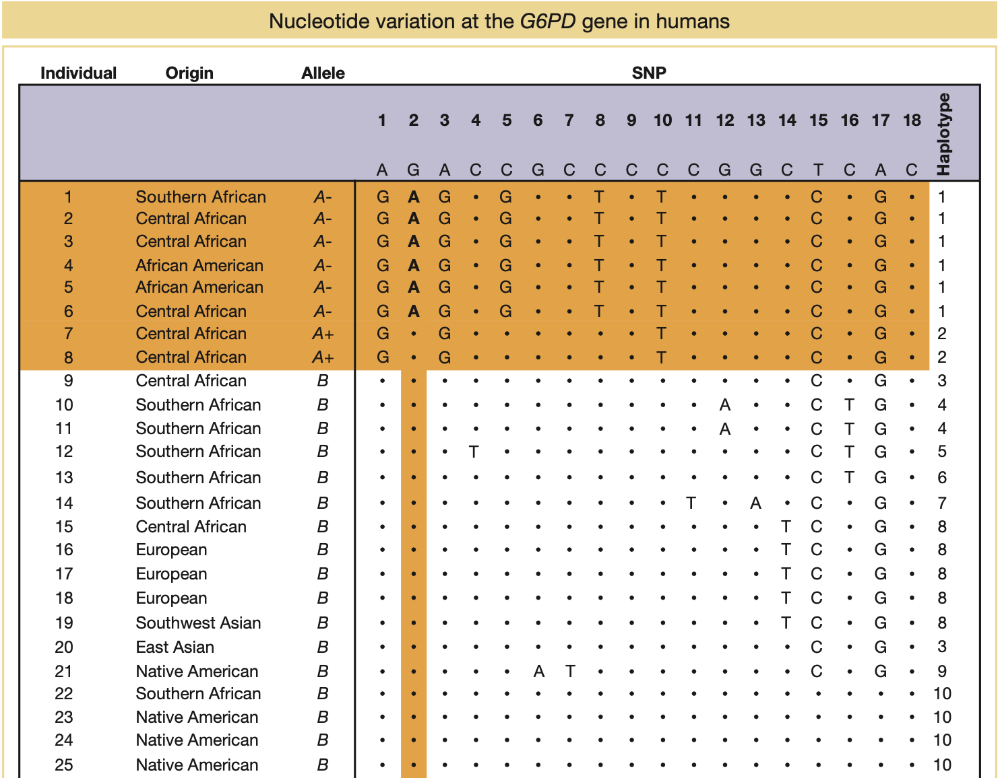


- How LD arises
	- &shy;<!-- .element: class="fragment" data-fragment-index="1" -->consider a population with only AB and Ab. what happens when a new allele "a" arises at A locus, on a chromosome that already possess b. Is LD zero? or is it maximum?
	- &shy;<!-- .element: class="fragment" data-fragment-index="2" -->other than mutation, can migration cause LD? how?
- &shy;<!-- .element: class="fragment" data-fragment-index="3" -->How LD decays
	- &shy;<!-- .element: class="fragment" data-fragment-index="4" -->decays proportional to **time** and **recombination fraction**
	- &shy;<!-- .element: class="fragment" data-fragment-index="5" -->can be used to estimate the age of mutation, how?

</split>


<div class="footnotes" role="doc-endnotes">
<ol>
<li id="fn:1" role="doc-endnote" class="footnote"><p>

Introduction to Genetic Analysis, ed 11, Fig. 18-17

</p></li></ol>
</div>
</div></script></section><section  data-markdown><script type="text/template"><!-- .slide: class="drop" data-auto-animate="true" -->
<div class="" style="position: absolute; left: 0px; top: 0px; height: 700px; width: 960px; min-height: 700px; display: flex; flex-direction: column; align-items: center; justify-content: center" absolute="true">

## Genetic drift and population size
- When calculating the expected genotype frequency from allele frequencies under Hardy-Weinberg Equilibrium, we made a sneaky assumption - the population size is assumed to be so large that we can "sample with replacement".
- &shy;<!-- .element: class="fragment" data-fragment-index="1" -->Real populations have finite population sizes. Sampling can lead to fluctuations in the allele frequency from generation to generation
	- &shy;<!-- .element: class="fragment" data-fragment-index="2" -->let's consider an extreme case: a population consisting of a single heterozygous (A/a) individual (N=1) at generation `$t_0$`. What's the allele frequency at `$t_0$`?
	- &shy;<!-- .element: class="fragment" data-fragment-index="3" -->suppose this species can self-fertilize, and that the population size remains at one in the next generation (`$t_1$`). what's the probability that the allele frequency will change (<mark>"drift"</mark>) to something other than its original value?
	- &shy;<!-- .element: class="fragment" data-fragment-index="4" -->what happens when we increase N to 2?
</div>

<aside class="notes"><p>when N=1, there is a 50% chance that one of the two alleles will be fixed in the next generation. when N=2, the chance is 12.5%</p>
</aside></script></section><section  data-markdown><script type="text/template"><!-- .slide: class="drop" data-auto-animate="true" -->
<div class="" style="position: absolute; left: 0px; top: 0px; height: 700px; width: 960px; min-height: 700px; display: flex; flex-direction: column; align-items: center; justify-content: center" absolute="true">

## Genetic drift and population size
<dl>
	<dt>Drift</dt>
	<dd>any change in allele frequencies due to sampling error, not just loss or fixation of an allele</dd>
</dl>

<div class="callout callout-color4">
<div class="callout-title">
<div class="callout-icon">

<i class="fas fa-question-circle" ></i>


</div>
<div class="callout-title-inner">

Question

</div>
</div>
<div class="callout-content">

In a population with 500 individuals (N=500) and two alleles at a frequency of `$p=q=0.5$`, if the next generation has 501 copies of A and 499 copies of a, **has there been genetic drift**?

</div>
</div>
</div></script></section><section  data-markdown><script type="text/template"><!-- .slide: class="drop" data-auto-animate="true" -->
<div class="" style="position: absolute; left: 0px; top: 0px; height: 700px; width: 960px; min-height: 700px; display: flex; flex-direction: column; align-items: center; justify-content: center" absolute="true">

## Genetic drift and population size
- Drift is caused by sampling variation In a **finite population**.
- &shy;<!-- .element: class="fragment" data-fragment-index="1" -->When drift is operating, one can **calculate the probabilities of different outcomes**, but one **cannot accurately predict the outcome that will occur**
- &shy;<!-- .element: class="fragment" data-fragment-index="2" -->At a locus, drift continues to affect the allele frequency from generation to generation, until one allele is eventually fixed (and all others are lost), hence no more variation at that locus.
- &shy;<!-- .element: class="fragment" data-fragment-index="3" -->Drift **doesn't proceed in a specific direction**.
</div></script></section><section  data-markdown><script type="text/template"><!-- .slide: class="drop" data-auto-animate="true" -->
<div class="" style="position: absolute; left: 0px; top: 0px; height: 700px; width: 960px; min-height: 700px; display: flex; flex-direction: column; align-items: center; justify-content: center" absolute="true">

## Genetic drift and population size
<div class="r-stack">
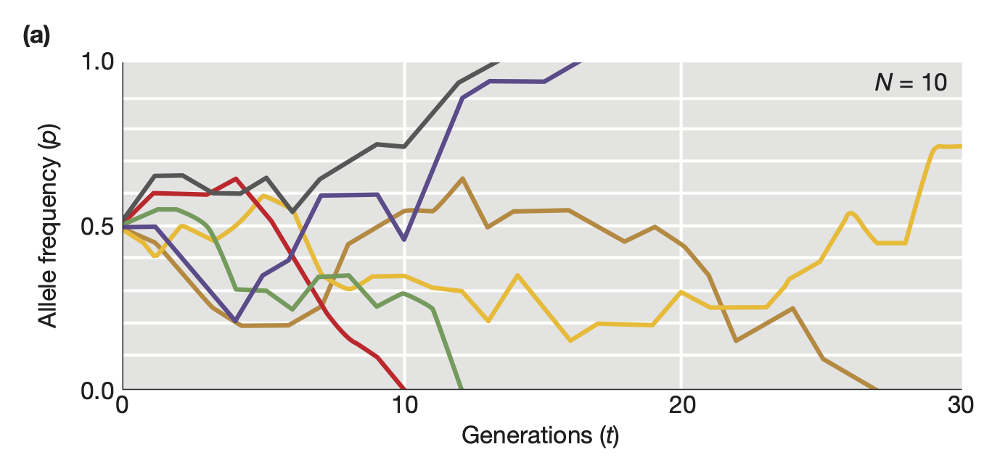

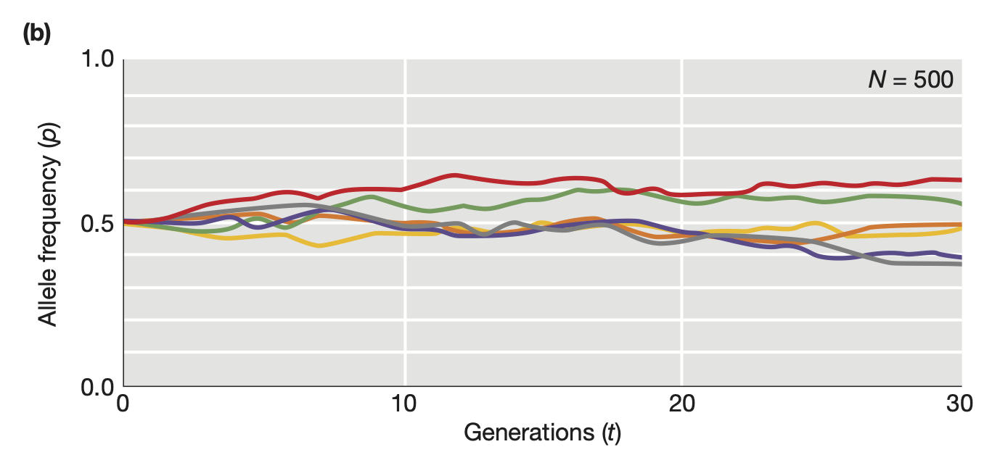

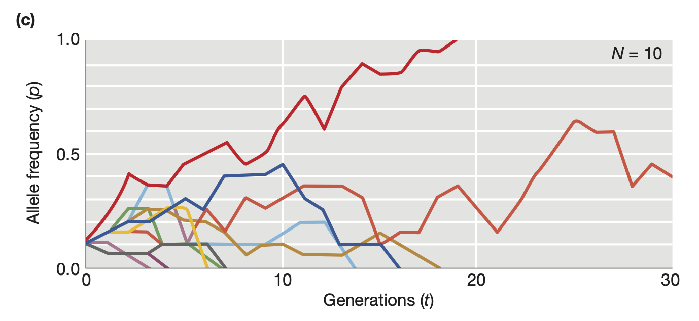

</div>
</div>

<aside class="notes"><ol>
<li>randomness of the processes - no two trajectories are identical</li>
<li>when N=10, a lot more populations became fixed for one of the two alleles (5/6), compared with 0/6 when N=500, shows that the effect of drift is inversely proportional to the size of the population</li>
</ol>
</aside></script></section><section  data-markdown><script type="text/template"><!-- .slide: class="drop" data-auto-animate="true" -->
<div class="" style="position: absolute; left: 0px; top: 0px; height: 700px; width: 960px; min-height: 700px; display: flex; flex-direction: column; align-items: center; justify-content: center" absolute="true">

## Genetic drift and population size
- Prob(an allele goes to fixation) ~ frequency in the present generation
- &shy;<!-- .element: class="fragment" data-fragment-index="1" -->The initial frequency of a new allele in a diploid population of size N is `$\frac{1}{2N}$`
- &shy;<!-- .element: class="fragment" data-fragment-index="2" -->If N is even modestly large, e.g., `$10^4$`, the probability of its fixation is `$5\times10^{-5}$`, while the probability of it eventually being lost is close to 1.0!

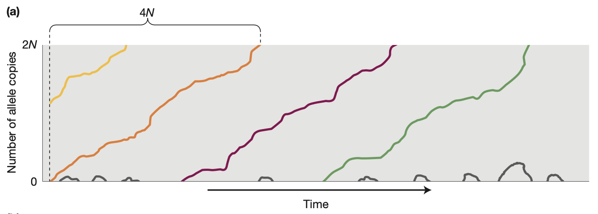
</div>

<aside class="notes"><p>most new mutations are lost; average time to fixation | fixed is 4N</p>
<div class="footnotes" role="doc-endnotes">
<ol>
<li id="fn:1" role="doc-endnote" class="footnote"><p>

<p> Introduction to Genetic Analysis, ed 11, Fig. 18-19a</p>
</p></li></ol>
</div></aside></script></section><section  data-markdown><script type="text/template"><!-- .slide: class="drop" data-auto-animate="true" -->
<div class="" style="position: absolute; left: 0px; top: 0px; height: 700px; width: 960px; min-height: 700px; display: flex; flex-direction: column; align-items: center; justify-content: center" absolute="true">

## Consequence of genetic drift
<div class="callout callout-color2">
<div class="callout-title">
<div class="callout-icon">

<i class="fas fa-fire-alt" ></i>


</div>
<div class="callout-title-inner">

Slightly deleterious alleles may be driven to fixation, while beneficial mutations are subject to loss

</div>
</div>
<div class="callout-content">

</div>
</div>

1. &shy;<!-- .element: class="fragment" data-fragment-index="1" -->Strongly deleterious mutations are quickly lost. But slightly deleterious ones can drift to fixation - and when it does, it does so **quickly** (counterintuitive?)
	- &shy;<!-- .element: class="fragment" data-fragment-index="2" -->do you know that the fate of a mutation is not only determined by its functional impact (beneficial or deleterious), but also population size?
1. &shy;<!-- .element: class="fragment" data-fragment-index="3" -->When a new beneficial mutation arise, there is an appreciable chance that it will be lost in the first few generations!
	- &shy;<!-- .element: class="fragment" data-fragment-index="4" -->the individual carrying the new mutation may not have the opportunity to reproduce.
	- &shy;<!-- .element: class="fragment" data-fragment-index="5" -->or it may not pass on the beneficial mutation (since by definition, a new mutation must be a single copy in a diploid individual)
</div></script></section><section  data-markdown><script type="text/template"><!-- .slide: class="drop" data-auto-animate="true" -->
<div class="" style="position: absolute; left: 0px; top: 0px; height: 700px; width: 960px; min-height: 700px; display: flex; flex-direction: column; align-items: center; justify-content: center" absolute="true">

## Molecular clock: implication of genetic drift
- Because of genetic drift, neutral mutations can become fixed, which we call "substitutions".
- &shy;<!-- .element: class="fragment" data-fragment-index="1" -->note the difference between "mutation" and "substitution"
- &shy;<!-- .element: class="fragment" data-fragment-index="2" -->the number of mutations that are expected to "appear" in a population in one generation is proportional to the number of copies in the gene pool, i.e., `$2N\mu$`, where `$\mu$` denotes the mutation rate per locus per generation.
- &shy;<!-- .element: class="fragment" data-fragment-index="3" -->recall that the probability of fixation for a neutral mutation equals its initial frequency. for a new, neutral mutation, this is `$\frac{1}{2N}$`
- &shy;<!-- .element: class="fragment" data-fragment-index="4" -->therefore, the number of **fixed neutral mutations** per generation, which we will call "substitution rate", or k, is `$k=2N\mu \times \frac{1}{2N}=\mu$`
- &shy;<!-- .element: class="fragment" data-fragment-index="5" -->that is, the substitution rate for neutral mutations equal the rate at which they appear. this is only true for neutral mutations!
</div></script></section><section  data-markdown><script type="text/template"><!-- .slide: class="drop" data-auto-animate="true" -->
<div class="" style="position: absolute; left: 0px; top: 0px; height: 700px; width: 960px; min-height: 700px; display: flex; flex-direction: column; align-items: center; justify-content: center" absolute="true">

## Molecular clock: implication of genetic drift
<split left="1" right="2">

<div class="mermaid">
graph TD
	O[Common ancestor]-->A[Species A]
	O[Common ancestor]-->B[Species B]

</div>


- `$d$`: number of **neutral substitutions** in a gene in both species since their divergence. 
- &shy;<!-- .element: class="fragment" data-fragment-index="1" -->`$d=2tk$`, where t is the divergence time.
- &shy;<!-- .element: class="fragment" data-fragment-index="2" -->`$t=\frac{d}{2k}$`, this provides a way to estimate divergence time based on the number of substitutions and estimate of substitution rate.
- &shy;<!-- .element: class="fragment" data-fragment-index="3" -->the estimated divergence time is in the unit of generations.
- &shy;<!-- .element: class="fragment" data-fragment-index="4" -->how to determine which substitutions are neutral?
- &shy;<!-- .element: class="fragment" data-fragment-index="5" -->can we observe all neutral substitutions?
- &shy;<!-- .element: class="fragment" data-fragment-index="6" -->how do we know mutation rate?
</split>
</div></script></section><section  data-markdown><script type="text/template"><!-- .slide: class="drop" -->
<div class="" style="position: absolute; left: 0px; top: 0px; height: 700px; width: 960px; min-height: 700px; display: flex; flex-direction: column; align-items: center; justify-content: center" absolute="true">

## Genetic drift and population size

<div class="callout callout-color1">
<div class="callout-title">
<div class="callout-icon">

<i class="fas fa-clipboard-list" ></i>


</div>
<div class="callout-title-inner">

Key concept

</div>
</div>
<div class="callout-content">

- Population size is a key factor affecting genetic variation in populations.

- &shy;<!-- .element: class="fragment" data-fragment-index="1" -->Genetic drift is a stronger force in small populations than in large ones.

- &shy;<!-- .element: class="fragment" data-fragment-index="2" -->The probability that an allele will become fixed in (or lost from) a population by drift is a function of its frequency in the population and population size.

- &shy;<!-- .element: class="fragment" data-fragment-index="3" -->Most new mutations are lost from populations by drift.

- &shy;<!-- .element: class="fragment" data-fragment-index="4" -->The constant rate of substitution for neutral mutations can be used to estimate divergence time.

</div>
</div>
</div></script></section><section  data-markdown><script type="text/template"><!-- .slide: class="drop" data-auto-animate="true" -->
<div class="" style="position: absolute; left: 0px; top: 0px; height: 700px; width: 960px; min-height: 700px; display: flex; flex-direction: column; align-items: center; justify-content: center" absolute="true">

## Selection

<div class="callout callout-color2">
<div class="callout-title">
<div class="callout-icon">

<i class="fas fa-fire-alt" ></i>


</div>
<div class="callout-title-inner">

Natural selection (_Darwinian_)

</div>
</div>
<div class="callout-content">

Populations change (_evolve_) over time as the environment (_nature_) favors (_selects_) features that enhance the ability to survive and reproduce.

</div>
</div>
</div></script></section><section  data-markdown><script type="text/template"><!-- .slide: class="drop" data-auto-animate="true" -->
<div class="" style="position: absolute; left: 0px; top: 0px; height: 700px; width: 960px; min-height: 700px; display: flex; flex-direction: column; align-items: center; justify-content: center" absolute="true">

## Selection

<div class="callout callout-color4">
<div class="callout-title">
<div class="callout-icon">

<i class="fas fa-question-circle" ></i>


</div>
<div class="callout-title-inner">

Question

</div>
</div>
<div class="callout-content">

We often use the phrase "_survival of the fittest_" to describe Darwinian selection. If an individual is physically strong, resistant to disease, and lives a long life, does this individual have a higher fitness?

</div>
</div>
</div></script></section><section  data-markdown><script type="text/template"><!-- .slide: class="drop" data-auto-animate="true" -->
<div class="" style="position: absolute; left: 0px; top: 0px; height: 700px; width: 960px; min-height: 700px; display: flex; flex-direction: column; align-items: center; justify-content: center" absolute="true">

## Selection
<split left="1" right="2">

<div class="mermaid">
graph TD
	A[sexually mature]
	B[gene pool]
	C[new zygote]
	A-->|generate gamete|B
	B-->|union of gametes|C
	C-->|survive|A

</div>


- &shy;<!-- .element: class="fragment" data-fragment-index="1" -->**Natural selection** means individuals with certain features are more likely to _survive AND reproduce_ than other individuals lacking these features.
- &shy;<!-- .element: class="fragment" data-fragment-index="2" -->Mutation generates new variants; recombination creates new combinations (haplotypes), both of which affect the phenotype (feature).
- &shy;<!-- .element: class="fragment" data-fragment-index="3" -->Individuals with higher **fitness** are more likely to survive and reproduce, i.e., their alleles will have a higher frequency in the gene pool in next round of reproduction -> changing the allele frequency.
- &shy;<!-- .element: class="fragment" data-fragment-index="4" --><mark>Where does selection operate in the left diagram</mark>?

</split>
</div></script></section><section  data-markdown><script type="text/template"><!-- .slide: class="drop" data-auto-animate="true" -->
<div class="" style="position: absolute; left: 0px; top: 0px; height: 700px; width: 960px; min-height: 700px; display: flex; flex-direction: column; align-items: center; justify-content: center" absolute="true">

## How natural selection alters allele frequency?
- Consider a locus A with three genotypes, A/A, A/a, and a/a in a population. The initial allele frequencies are `$p=0.1, q=0.9$`
- &shy;<!-- .element: class="fragment" data-fragment-index="1" -->A is a favored dominant allele
  | Genotype | A/A | A/a | a/a |
  |-|-|-|-|
  | Average number of offspring (W) | 10 | 10 | 5 |
  | Relative fitness (w) | 1.0 | 1.0 | 0.5 |
  | Genotype frequency |  |  |  |
</div></script></section><section  data-markdown><script type="text/template"><!-- .slide: class="drop" data-auto-animate="true" -->
<div class="" style="position: absolute; left: 0px; top: 0px; height: 700px; width: 960px; min-height: 700px; display: flex; flex-direction: column; align-items: center; justify-content: center" absolute="true">

## How natural selection alters allele frequency?
- A is a favored dominant allele
  | | A/A | A/a | a/a |
  |-|-|-|-|
  |Average number of offspring (W) | 10 | 10 | 5 |
  | Relative fitness (w) | 1.0 | 1.0 | 0.5 |
  | Genotype frequency | 0.01 | 0.18  | 0.81  |
- &shy;<!-- .element: class="fragment" data-fragment-index="1" -->The relative contribution of each genotype to the gene pool is determined by **the product of its fitness and frequency**
  | Genotype | A/A | A/a | a/a | Sum |
  |-|-|-|-|-|
  | Relative contribution | 1 x 0.01 | 1 x 0.18 | 0.5 x 0.81 |
  | | = 0.01 | = 0.18 | = 0.405 | 0.595 |
</div></script></section><section  data-markdown><script type="text/template"><!-- .slide: class="drop" data-auto-animate="true" -->
<div class="" style="position: absolute; left: 0px; top: 0px; height: 700px; width: 960px; min-height: 700px; display: flex; flex-direction: column; align-items: center; justify-content: center" absolute="true">

## How natural selection alters allele frequency?
- The relative contribution of each genotype to the gene pool is determined by **the product of its fitness and frequency**
  | Genotype | A/A | A/a | a/a | Sum |
  |-|-|-|-|-|
  | Relative contribution | 0.01 | 0.18 | 0.405 | 0.595 |
  | Genotype frequency | 0.02 | 0.30 | 0.68 | 1.0 |
- &shy;<!-- .element: class="fragment" data-fragment-index="1" -->Now, let's use the genotype frequency to calculate the allele frequency, and then use that to calculate the expected genotype frequency in the next generation of zygotes under HWE
	- &shy;<!-- .element: class="fragment" data-fragment-index="2" -->`$p'=?$` how much did `$p$` change over one round of selection?
	- &shy;<!-- .element: class="fragment" data-fragment-index="3" -->`$P_{AA}=?$`, etc.
</div>

<aside class="notes"><ol>
<li><code>$p&#39;=0.02+0.15=0.17$</code></li>
<li><code>$P_{AA}=0.17^2=0.0289, P_{Aa}=2\times0.17\times0.83=0.2822, P_{aa}=0.83^2=0.6889$</code></li>
</ol>
</aside></script></section><section  data-markdown><script type="text/template"><!-- .slide: class="drop" data-auto-animate="true" -->
<div class="" style="position: absolute; left: 0px; top: 0px; height: 700px; width: 960px; min-height: 700px; display: flex; flex-direction: column; align-items: center; justify-content: center" absolute="true">

## How natural selection alters allele frequency?
More generally

define `$\bar{w}=p^2w_{A/A}+2pqw_{A/a}+q^2w_{a/a}$` is the mean relative fitness of the population

then, `$p'=\frac{p^2w_{A/A}+\frac{1}{2}\times2pqw_{A/a}}{\bar{w}}=p\frac{pw_{A/A}+qw_{A/a}}{\bar{w}}$`

<p class="fragment"> we define `$w_A=pw_{A/A}+qw_{A/a}$` as allelic fitness, or mean fitness of allele A </p>

<p class="fragment"> `$\Delta p=p'-p=p\frac{w_A}{\bar{w}}-p=\frac{p(w_A-\bar{w})}{\bar{w}}$` </p>
</div></script></section><section  data-markdown><script type="text/template"><!-- .slide: class="drop" data-auto-animate="true" -->
<div class="" style="position: absolute; left: 0px; top: 0px; height: 700px; width: 960px; min-height: 700px; display: flex; flex-direction: column; align-items: center; justify-content: center" absolute="true">

## Forms of selection
1. Directional selection
	- &shy;<!-- .element: class="fragment" data-fragment-index="1" -->Positive selection
	- &shy;<!-- .element: class="fragment" data-fragment-index="2" -->Purifying (negative) selection
1. &shy;<!-- .element: class="fragment" data-fragment-index="3" -->Balancing selection
	- &shy;<!-- .element: class="fragment" data-fragment-index="4" -->if the heterozygous class has higher fitness than either homozygous ones, selection would favor the **maintenance of both alleles**.
	- &shy;<!-- .element: class="fragment" data-fragment-index="5" -->can you think of example scenarios for balancing selection?
	- &shy;<!-- .element: class="fragment" data-fragment-index="6" -->are there other types of selection that can **maintain genetic diversity** rather than **eliminating it**?
</div></script></section><section  data-markdown><script type="text/template"><!-- .slide: class="drop" -->
<div class="" style="position: absolute; left: 0px; top: 0px; height: 700px; width: 960px; min-height: 700px; display: flex; flex-direction: column; align-items: center; justify-content: center" absolute="true">

## Signatures of positive selection
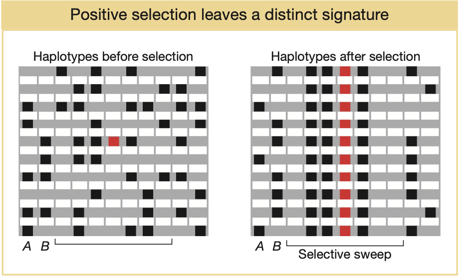


<div class="fragment fade-out has-light-background" style="background-color: white; position: absolute; left: 50%; top: 30%; height: 62%; width: 45%; display: flex; flex-direction: column; align-items: center; justify-content: center" >

</div>


<div class="footnotes" role="doc-endnotes">
<ol>
<li id="fn:1" role="doc-endnote" class="footnote"><p>

Introduction to Genetic Analysis, ed 11, Fig. 18-22

</p></li></ol>
</div>
</div></script></section><section  data-markdown><script type="text/template"><!-- .slide: class="drop" data-auto-animate="true" -->
<div class="" style="position: absolute; left: 0px; top: 0px; height: 700px; width: 960px; min-height: 700px; display: flex; flex-direction: column; align-items: center; justify-content: center" absolute="true">

## Signatures of positive selection
- By driving the favored allele to fixation "very fast", positive selection causes a selective sweep that ends up
	- &shy;<!-- .element: class="fragment" data-fragment-index="1" -->also fix linked sites or drive the linked allele to high frequency
	- &shy;<!-- .element: class="fragment" data-fragment-index="2" -->hence removing genetic variation from the population
	- &shy;<!-- .element: class="fragment" data-fragment-index="3" -->creates LD
- &shy;<!-- .element: class="fragment" data-fragment-index="4" -->Note that this signature is **transient**.  What does this mean, why?
</div></script></section><section  data-markdown><script type="text/template"><!-- .slide: class="drop" -->
<div class="" style="position: absolute; left: 0px; top: 0px; height: 700px; width: 960px; min-height: 700px; display: flex; flex-direction: column; align-items: center; justify-content: center" absolute="true">

## Use selective sweep signature to infer positive selection

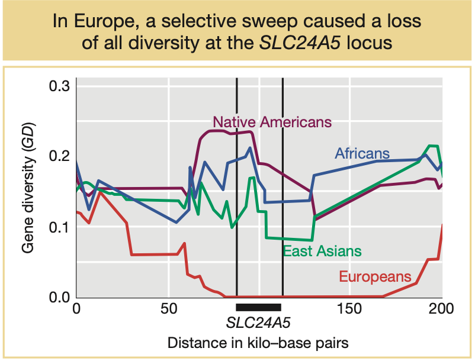


<div class="footnotes" role="doc-endnotes">
<ol>
<li id="fn:1" role="doc-endnote" class="footnote"><p>

Introduction to Genetic Analysis, ed 11, Fig. 18-23

</p></li></ol>
</div>
</div></script></section><section  data-markdown><script type="text/template"><!-- .slide: class="drop" -->
<div class="" style="position: absolute; left: 0px; top: 0px; height: 700px; width: 960px; min-height: 700px; display: flex; flex-direction: column; align-items: center; justify-content: center" absolute="true">

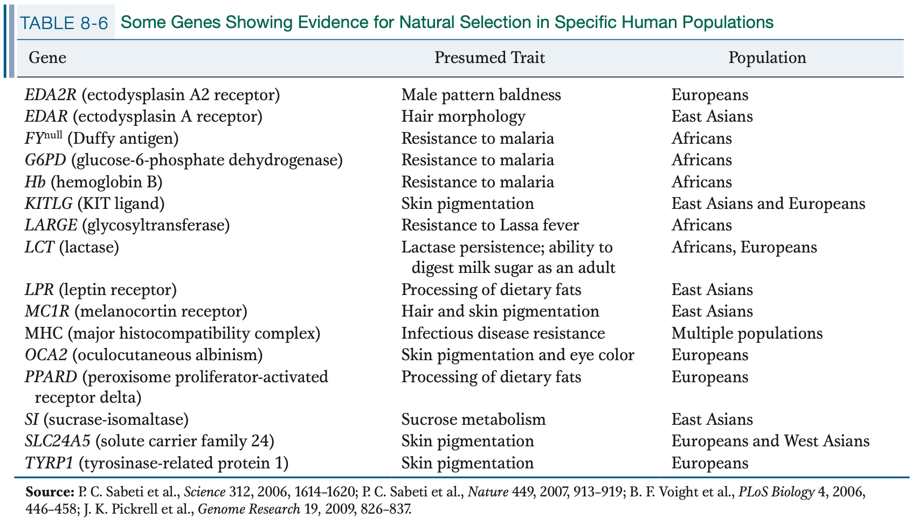


<div class="footnotes" role="doc-endnotes">
<ol>
<li id="fn:1" role="doc-endnote" class="footnote"><p>

Introduction to Genetic Analysis, ed 11, Table 18-6

</p></li></ol>
</div>
</div></script></section><section  data-markdown><script type="text/template"><!-- .slide: class="drop" -->
<div class="" style="position: absolute; left: 0px; top: 0px; height: 700px; width: 960px; min-height: 700px; display: flex; flex-direction: column; align-items: center; justify-content: center" absolute="true">

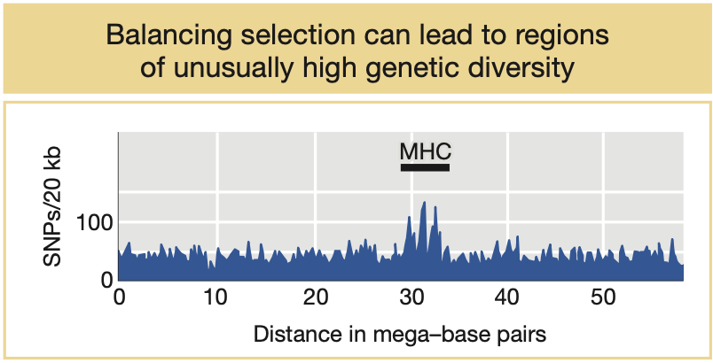


<div class="footnotes" role="doc-endnotes">
<ol>
<li id="fn:1" role="doc-endnote" class="footnote"><p>

Introduction to Genetic Analysis, ed 11, Fig. 18-24

</p></li></ol>
</div>
</div></script></section></div>
    </div>

    <script src="dist/reveal.js"></script>

    <script src="plugin/markdown/markdown.js"></script>
    <script src="plugin/highlight/highlight.js"></script>
    <script src="plugin/zoom/zoom.js"></script>
    <script src="plugin/notes/notes.js"></script>
    <script src="plugin/math/math.js"></script>
	<script src="plugin/mermaid/mermaid.js"></script>
	<script src="plugin/chart/chart.min.js"></script>
	<script src="plugin/chart/plugin.js"></script>
	<script src="plugin/menu/menu.js"></script>
	<script src="plugin/customcontrols/plugin.js"></script>
	<script src="plugin/chalkboard/plugin.js"></script>
	<script src="plugin/reveal-pointer/pointer.js"></script>

    <script>
      function extend() {
        var target = {};
        for (var i = 0; i < arguments.length; i++) {
          var source = arguments[i];
          for (var key in source) {
            if (source.hasOwnProperty(key)) {
              target[key] = source[key];
            }
          }
        }
        return target;
      }

	  function isLight(color) {
		let hex = color.replace('#', '');

		// convert #fff => #ffffff
		if(hex.length == 3){
			hex = `${hex[0]}${hex[0]}${hex[1]}${hex[1]}${hex[2]}${hex[2]}`;
		}

		const c_r = parseInt(hex.substr(0, 2), 16);
		const c_g = parseInt(hex.substr(2, 2), 16);
		const c_b = parseInt(hex.substr(4, 2), 16);
		const brightness = ((c_r * 299) + (c_g * 587) + (c_b * 114)) / 1000;
		return brightness > 155;
	}

	var bgColor = getComputedStyle(document.documentElement).getPropertyValue('--r-background-color').trim();
	var isLight = isLight(bgColor);

	if(isLight){
		document.body.classList.add('has-light-background');
	} else {
		document.body.classList.add('has-dark-background');
	}

      // default options to init reveal.js
      var defaultOptions = {
        controls: true,
        progress: true,
        history: true,
        center: true,
        transition: 'default', // none/fade/slide/convex/concave/zoom
        plugins: [
          RevealMarkdown,
          RevealHighlight,
          RevealZoom,
          RevealNotes,
          RevealMath.MathJax3,
		  RevealMermaid,
		  RevealChart,
		  RevealCustomControls,
		  RevealMenu,
	      RevealPointer,
		  RevealChalkboard, 
        ],


    	allottedTime: 120 * 1000,

		mathjax3: {
			mathjax: 'plugin/math/mathjax/tex-mml-chtml.js',
		},
		markdown: {
		  gfm: true,
		  mangle: true,
		  pedantic: false,
		  smartLists: false,
		  smartypants: false,
		},

		mermaid: {
			theme: isLight ? 'default' : 'dark',
		},

		customcontrols: {
			controls: [
				{ icon: '<i class="fa fa-pen-square"></i>',
				title: 'Toggle chalkboard (B)',
				action: 'RevealChalkboard.toggleChalkboard();'
				},
				{ icon: '<i class="fa fa-pen"></i>',
				title: 'Toggle notes canvas (C)',
				action: 'RevealChalkboard.toggleNotesCanvas();'
				},
			]
		},
		menu: {
			loadIcons: false
		}
      };

      // options from URL query string
      var queryOptions = Reveal().getQueryHash() || {};

      var options = extend(defaultOptions, {"width":960,"height":700,"margin":0.04,"controls":true,"progress":true,"slideNumber":true,"transition":"fade","transitionSpeed":"default"}, queryOptions);
    </script>

    <script>
      Reveal.initialize(options);
    </script>
  </body>

  <!-- created with Advanced Slides -->
</html>
